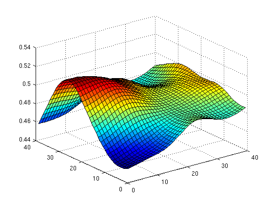

alias
An alias object is an object whose default displaying behavior has been overwriten and instead executes a specific command. This is a very convenient way of defining shortcuts.
Contents
Syntax
shortcut = alias(cmd[,msg]) disp(shortcut) alias.save alias.add alias.load
Example
The following line defines a shortcut that displays a surface in figure 1.
f1 = alias('figure(1), surf(fn_smooth(rand(40),6))','hello!'); disp(f1)
alias object, executes the following command when displayed: figure(1), surf(fn_smooth(rand(40),6))
Execute the preceding lines, then just type f1 to get the shortcut executed.
f1
hello!
Save your shortcuts by typing alias.save (or alias.add to save new shortcuts without overwriting those already defined), and load them with alias.load.
Notes:
- If no semi-column ';' is placed after the alias definition, the command is immediately executed, since the object default displaying behavior is to execute the command rather than displaying itself!
- As can be noticed in the example however, the 'disp' method of the object has also been overwritten, and results in displaying the command in the Matlab command. Also, if a second argument is used during alias definition, a custom message can be displayed while the command is being executed
- alias works only in the base workspace, and any way, it would be a very bad practice to use something similar when writing Matlab functions!
- any time clear or clear all is executed, all alias object are deleted and need to be reloaded if you want to continue using them. Consider creating an alias such as cl = alias('clear all, alias.load')!
See also
Use should definitively use also Matlab shortcuts toolbar to get commands executed with a simple mouse-click!
Source
Thomas Deneux
Copyright 2009-2012